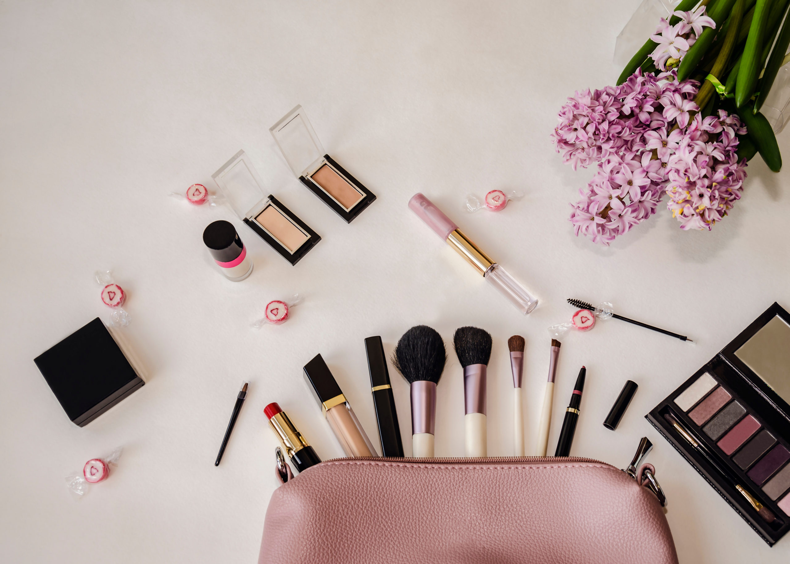

Affordable Product Picks
Skin care, makeup, and self-care products that actually work — and still cost under typical high-end prices. We explain why each product is good and where you can buy it.
 Creative Commons — Attribution-NonCommercial 4.0 (CC BY-NC 4.0) Creative Commons — Attribution-NoDerivatives 4.0
Creative Commons — Attribution-NoDerivatives 4.0